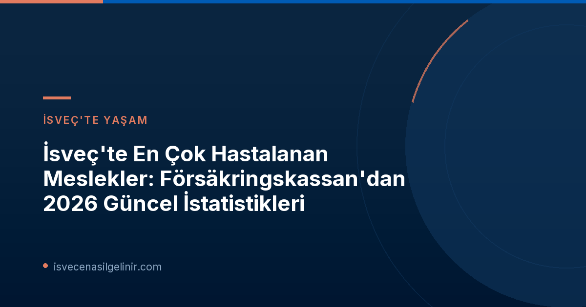

Försäkringskassan'dan Yeni Veriler: Hangi Meslekler Zirvede?
İsveç Sosyal Sigortalar Kurumu Försäkringskassan'ın 4 Kasım 2026 tarihinde yayımladığı güncel istatistikler, İsveç'te en çok hastalık izni kullanan meslek gruplarını ortaya koyuyor. Bu veriler, işgücünün sağlığı ve çalışma koşulları hakkında önemli ipuçları sunuyor.En Yüksek Hastalık İzni Oranına Sahip Meslekler
- **Yardımcı Hemşireler (Undersköterskor):** Bakım sektöründeki yoğunluk ve fiziksel/zihinsel yük.
- **Gazete Dağıtıcıları (Tidningsbud):** Düzensiz çalışma saatleri ve fiziksel zorluklar.
- **Bakım Görevlileri (Vaktmästare):** Geniş yelpazedeki görevler ve fiziksel efor gerektiren işler.
- **Diş Hijyenistleri (Tandhygienister):** Ergonomik zorluklar ve detaylı, dikkat gerektiren işler.
Bu meslekler, Försäkringskassan'a gelen yaklaşık 600.000 yeni hastalık ödeneği başvurusunun önemli bir kısmını oluşturmaktadır.
Sektör Bazında Hastalık İzni Oranları ve Temel Nedenler
Genel olarak bakıldığında, İsveç'te hastalık izni oranlarının en yüksek olduğu sektörler **eğitim, sağlık ve bakım** olarak öne çıkıyor. Bireysel mesleklere indiğimizde ise, hayvan bakımı, sosyal hizmetler, imalat ve ulaştırma sektörlerindeki meslek gruplarının da yüksek sayıda hastalık vakası başlattığı görülüyor. Bu gruplarda, her 1000 çalışandan 100'den fazlasının 14 günden uzun süreli hastalık izni kullandığı belirtiliyor. Försäkringskassan analisti Peter Abrahamsson, bu durumun en önemli tek nedeninin **iş ortamı** olduğunu vurguluyor. Abrahamsson, "İş ortamı, genel düzeyde hastalık izinlerini etkileyen en önemli faktördür, ancak bireyler için elbette özel koşullar da etkili olabilir" diyor. Ayrıca, bazı daha basit hizmet mesleklerinde, iş piyasasında kendini savunmakta zorlanan birçok kişinin çalıştığını ve bunun iş ortamındaki zorluklarla birleştiğinde daha yüksek hastalık oranlarına yol açtığını belirtiyor.| Faktör | Etki |
|---|---|
| **İş Ortamı** | Hastalık izinlerini en çok etkileyen ana faktör. |
| **Stres Faktörleri** | Psikiyatrik tanılarda artışa neden oluyor. |
| **İş Piyasasındaki Zorluklar** | Bazı hizmet sektörlerinde hastalık izni oranlarını artırıyor. |
| **Bireysel Koşullar** | Her birey için hastalık durumunu etkileyebilir. |
En Az Hastalanan Meslekler: Stres ve Fiziksel Risk Faktörleri
İstatistiklere göre, İsveç'te en az hastalık izni kullanan meslek grupları **askerler, politikacılar ve üst düzey yöneticiler** olarak sıralanıyor. Bu durum, bu mesleklerin doğası, çalışma koşulları veya sosyal destek sistemleriyle ilişkili olabilir. İsveç'te devam eden hastalık vakalarının büyük bir çoğunluğu **psikiyatrik tanılardan**, özellikle de **stresle ilişkili** durumlardan kaynaklanmaktadır. İş ortamındaki fiziksel tehlikelerden kaynaklanan hastalık izinleri ise uzun bir süredir azalma eğilimindedir. Peter Abrahamsson, stresle ilişkili hastalık izinleri konusunda yapılan araştırmaların, işteki talep ve performans ile ödül, yetki ve kaynaklar arasındaki ilişkinin çok önemli olduğunu gösterdiğini belirtiyor. İşyerinde beklenen performans ile sağlanan koşullar arasında bir dengenin olmasının kritik olduğunu vurguluyor. İsveç Vatandaşlık Sınavı gibi önemli süreçlerde de bireylerin yaşadığı stres ve motivasyon dengesi büyük önem taşımaktadır.İsveç'te Hastalık Ödeneği (Sjukpenning) Sistemi Nasıl İşler?
İsveç'teki hastalık ödeneği sistemi şu şekilde işlemektedir: * **İlk 14 Gün:** Çalışanlar, hastalıklarının ilk 14 günü boyunca işverenlerinden hastalık maaşı (sjuklön) alırlar. * **14 Günden Sonra:** Bu süreden sonra, kişi Försäkringskassan'a hastalık ödeneği (sjukpenning) başvurusunda bulunabilir. * **İstatistiklerin Kapsamı:** Försäkringskassan tarafından yayımlanan bu istatistikler, yalnızca 14 günden uzun süren hastalık vakalarını kapsamaktadır. 14 günden kısa süreli olan "kısa dönem devamsızlıklar" bu verilere dahil edilmemiştir. Bu bilgiler ışığında, İsveç'teki mesleki sağlık ve çalışma koşullarının, özellikle belirli sektörlerdeki çalışanlar için dikkatle izlenmesi ve iyileştirilmesi gereken alanlar olduğu görülmektedir. **Referanslar:** * Försäkringskassan Resmi Duyurusu: Yrkena där man är sjuk mest – statistik för alla yrken * sverigemedborgarskapsprov.comİsveç'te Yaşam ve Çalışma Hakkında Daha Fazla Bilgi Edinin
İsveç'teki sosyal haklar, çalışma izinleri ve vatandaşlık süreçleri hakkında en güncel bilgilere ulaşmak için sitemizi ziyaret edin. Uzmanlarımızdan rehberlik alın!